Durante tres siglos la luz fue un campo de batalla entre dos imágenes: una corriente de partículas o una onda. Hoy veremos cómo un experimento aparentemente sencillo —iluminar un metal— obligó a la física a reinventarse y dio origen a la idea del fotón.
Temas que exploraremos:
La luz como onda y como partícula
Efecto fotoeléctrico y la ecuación de Einstein
El fotón: energía, momento y presión de radiación
Éter, campos y acción a distancia
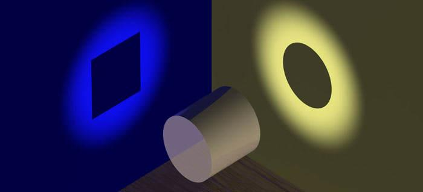
Pregunta guía
Si la luz fuese solo una onda continua, una potente lámpara roja debería arrancar electrones de un metal con más facilidad que un tenue haz ultravioleta. En el laboratorio ocurre exactamente lo contrario. ¿Por qué?
Tres siglos de debate: ¿qué es la luz?
Cada modelo explicó bien una parte de los fenómenos y fracasó en otra
1704
Newton Luz como corpúsculos
1801
Young Interferencia: luz como onda
1862
Maxwell Luz = onda electromagnética
1887
Hertz Ondas de radio y, sin querer, el efecto fotoeléctrico
1905
Einstein Cuantos de luz (fotones)
1916
Millikan Verifica la ecuación de Einstein
1923
Compton El fotón tiene momento
Filo conductor de la clase
Primero reunimos las pruebas de que la luz es una onda. Luego veremos un fenómeno —el efecto fotoeléctrico— que esa teoría no puede explicar, y cómo Einstein lo resolvió con una idea radical: la energía de la luz viene en paquetes. Al final nos preguntaremos qué tipo de «cosa» es la luz y qué papel juegan el éter y los campos.
Una idea para llevar
La luz no «cambió» durante estos tres siglos: lo que cambió fue nuestra descripción. Los modelos de onda y de partícula son aproximaciones útiles de un objeto cuántico que no es exactamente ninguno de los dos.
Mapa de la clase
Parte I · Luz como onda
Young, Maxwell, Hertz: interferencia, difracción e intensidad.
Parte II · Luz como fotón
Efecto fotoeléctrico, ecuación de Einstein, aplicaciones, momento y presión de radiación.
Parte III · Campos
Por qué no necesitamos éter y cómo los campos resuelven la acción a distancia.
1. Antecedentes: la luz como onda
El experimento de la doble rendija (Young, 1801)
Al pasar luz por dos rendijas muy cercanas, Young obtuvo en la pantalla franjas brillantes y oscuras alternadas. Las franjas oscuras son la clave: sumar luz con luz produjo oscuridad. Con corpúsculos que simplemente se suman eso es imposible; con ondas sí, porque en esos puntos llega una cresta de una rendija junto con un valle de la otra y se anulan (interferencia destructiva).
Franjas brillantes: \( d\,\sin\theta = m\lambda \quad (m = 0, \pm1, \pm2, \dots) \) Separación entre franjas: \( \Delta y \approx \dfrac{\lambda L}{d} \)
\(d\): separación entre rendijas, \(L\): distancia a la pantalla, \(\lambda\): longitud de onda. Con \(\lambda = 650\) nm, \(d = 0{,}25\) mm y \(L = 2\) m resulta \(\Delta y \approx 5{,}2\) mm: franjas visibles a simple vista.
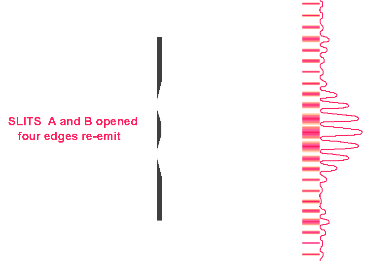
Al abrir ambas rendijas aparece un patrón de franjas: la intensidad no es la suma de las dos rendijas por separado.
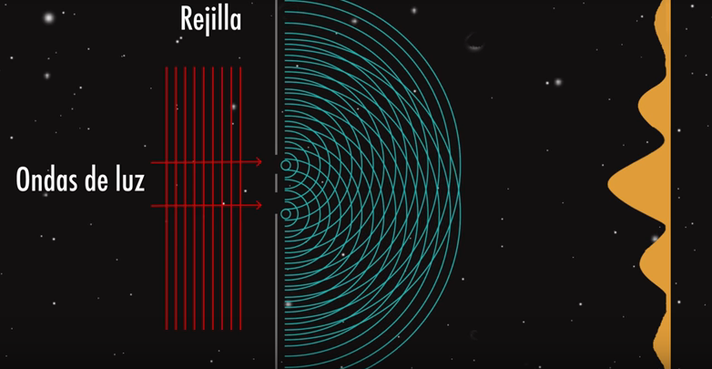
Frentes de onda que salen de dos rendijas y se superponen.
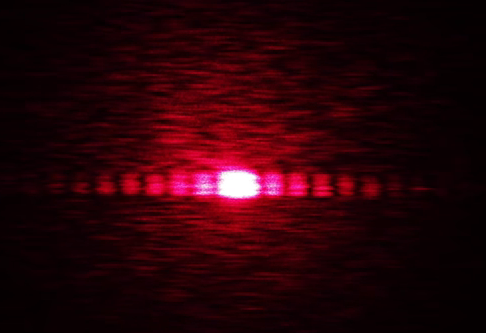
Patrón real con un láser rojo: franjas brillantes separadas por zonas oscuras.
Cuatro pruebas a favor de la onda
Young (1801): interferencia
Luz + luz puede dar oscuridad. Además, la separación de las franjas permite medir \(\lambda\): para la luz visible es de unos 0,4–0,7 μm.
Huygens y Fresnel: difracción
Huygens (1678) propuso que cada punto de un frente de onda actúa como fuente de ondas secundarias. Fresnel lo completó con interferencia. Poisson, su crítico, dedujo de esa teoría un resultado «absurdo»: un punto brillante en el centro de la sombra de un disco. Arago lo observó en 1819.
Maxwell (1862–1865): la teoría
Los campos eléctricos y magnéticos oscilantes se propagan con rapidez \( c = 1/\sqrt{\mu_0 \varepsilon_0} \approx 3\times10^{8}\) m/s, justo la rapidez medida para la luz. Conclusión: la luz es una onda electromagnética.
Hertz (1887): la prueba experimental
Veinticinco años después, Hertz usó circuitos que producen chispas para generar y detectar ondas de radiofrecuencia. Se reflejaban, refractaban y polarizaban como la luz. Eran ondas electromagnéticas reales.
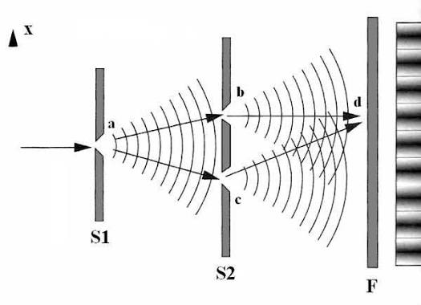
Principio de Huygens: cada punto de un frente de onda es fuente de ondas secundarias.
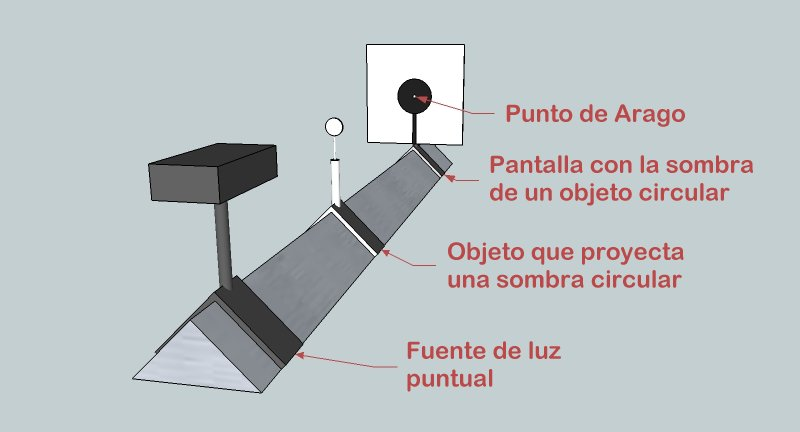
Mancha de Poisson-Arago: punto brillante en el centro de la sombra de un disco, predicho por la teoría ondulatoria.
2. Midiendo la luz como onda: longitud de onda e intensidad
Experimento de Young con un láser rojo (canal ProCiencia): a partir de la separación entre rendijas, la distancia a la pantalla y la separación entre franjas oscuras consecutivas se mide indirectamente \(\lambda\).
Receta para medir λ
Mide \(d\), \(L\) y la separación \(\Delta y\) entre franjas consecutivas. Despeja
\[ \lambda \approx \frac{d\,\Delta y}{L} \]
Una regla y un láser bastan para «pesar» la longitud de onda de la luz.
Intensidad de la onda electromagnética
La intensidad es la potencia que atraviesa cada metro cuadrado (W/m²). Para una onda electromagnética:
\[ I = \tfrac{1}{2}\, c\, \varepsilon_0\, E_0^{2} \]
\(E_0\): amplitud del campo eléctrico, \(c\): rapidez de la luz, \(\varepsilon_0 = 8{,}85\times10^{-12}\) F/m.
La intensidad crece con el cuadrado de la amplitud: el doble de campo, cuatro veces la intensidad.
La energía está repartida de forma continua sobre todo el frente de onda.
Un orden de magnitud: la luz solar (\(I \approx 1000\) W/m²) corresponde a \(E_0 \approx 870\) V/m.
Una predicción que pondremos a prueba
En el modelo ondulatorio, «más brillante» significa «campo más intenso», y por tanto cada electrón del metal debería recibir más energía y más rápido. La energía de la luz no depende de su color, solo de su amplitud. Guardemos esta predicción: el efecto fotoeléctrico la va a contradecir.
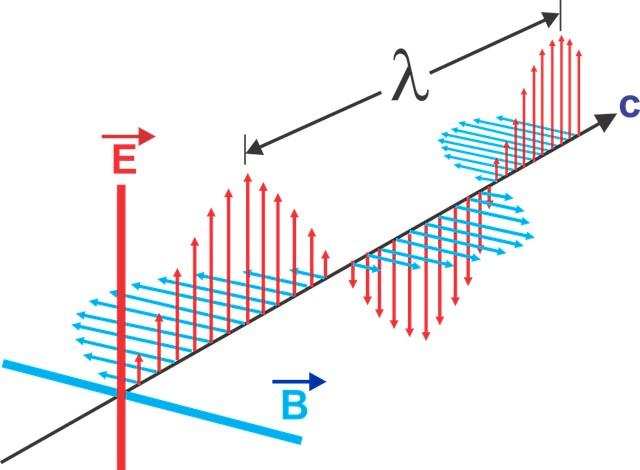
Onda electromagnética: los campos \(\vec E\) y \(\vec B\) oscilan perpendiculares entre sí y a la dirección de propagación.
3. Nacimiento de la física cuántica
A finales del siglo XIX la mecánica de Newton, el electromagnetismo de Maxwell y la termodinámica describían casi todo lo conocido. Pero tres fenómenos se resistían a cualquier arreglo «clásico»:
Limitaciones de la física clásica
Radiación de cuerpo negro
La teoría clásica predecía emisión infinita en el ultravioleta. Planck (1900) lo resolvió suponiendo que la energía se intercambia en paquetes: \(E = hf\).
Efecto fotoeléctrico
La onda clásica no explicaba el umbral de frecuencia ni la emisión instantánea. Einstein (1905) lo resolvió con los cuantos de luz. Es el tema de hoy.
Espectros de emisión y absorción
Los átomos emiten solo líneas de colores muy precisos. Bohr (1913) lo explicó con niveles de energía cuantizados.
↓
Nuevos conceptos
Mecánica cuántica y sus formulaciones: Heisenberg (matrices, 1925), Schrödinger (ondas, 1926), Dirac y Feynman: distintos lenguajes matemáticos para una misma teoría.
Modelos de partículas elementales: quarks, leptones (como el electrón) y los bosones que transmiten las interacciones, entre ellos el fotón.
Fuerza fuerte y fuerza débil: las dos interacciones nucleares que se suman a la gravedad y al electromagnetismo. La fuerte mantiene unidos protones y neutrones; la débil gobierna la desintegración beta.
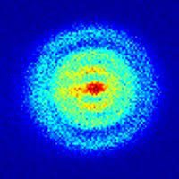
Distribución en falso color (imagen de la presentación original).
Rampa frente a escalera
En la física clásica la energía puede variar de forma continua, como al subir por una rampa: cualquier altura es posible. En la física cuántica la energía se intercambia en escalones bien definidos (cuantos): solo hay ciertos valores permitidos. Hoy vemos el primer escalón de la luz: el fotón.
4. Antecedentes: la luz como partícula
Newton (1704): los corpúsculos
En su Óptica, Isaac Newton describió la luz como una corriente de partículas o corpúsculos. Con ese modelo explicaba la propagación en línea recta (las sombras nítidas) y la reflexión como un rebote.
Pero tenía un punto débil: para explicar la refracción tenía que suponer que la luz viaja más rápido en el agua que en el aire. En 1850 Foucault midió lo contrario, y el modelo corpuscular perdió fuerza.
Einstein (1905): los cuantos de luz
Einstein publicó un trabajo que le valió el Premio Nobel de Física de 1921. Desafiaba la teoría ondulatoria: la luz no interactúa con la materia como una onda continua (como concebía Maxwell), sino en forma de paquetes diminutos de energía que hoy llamamos fotones.
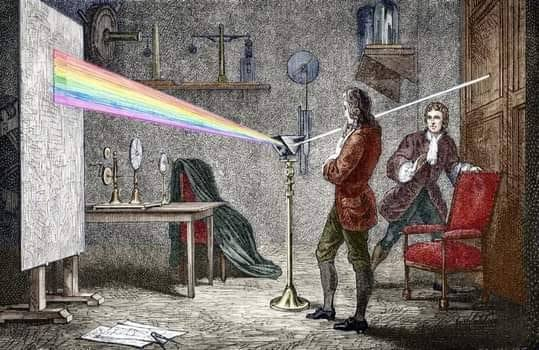
Newton estudió la luz con prismas: la luz blanca contiene todos los colores.
No son la misma partícula
Corpúsculo de Newton
Una «bolita» clásica que sigue trayectorias.
Su energía no está ligada a ninguna frecuencia.
No puede producir interferencia.
Fotón de Einstein
Un cuanto de energía indivisible: se emite o se absorbe completo.
Su energía depende de una propiedad ondulatoria: \(E = hf\).
Convive con el comportamiento ondulatorio.
Por qué importa la diferencia
La partícula de Einstein lleva el «color» en su energía: un fotón violeta es más energético que un fotón rojo. Un corpúsculo de Newton no tiene color propio. Por eso, el fotón no es una vuelta al modelo corpuscular, sino una idea nueva que ya contiene a la onda.
5. Dualidad onda-partícula
El descubrimiento de Einstein no eliminó la concepción de las ondas luminosas. En lugar de ello, indicó que la luz es al mismo tiempo una onda y una partícula: se estableció la dualidad onda-partícula para la luz.
Cuidado con la frase «a veces onda, a veces partícula»
La luz no cambia de naturaleza. Es un objeto cuántico que no es ni una bolita ni una ola clásica. Según el experimento que hagamos, muestra rasgos de uno u otro modelo (principio de complementariedad de Bohr).
Cuando la luz…
Se describe como…
Se propaga, se difracta, interfiere o se polariza
Onda
Se emite o se absorbe (efecto fotoeléctrico, Compton, detección en un CCD)
Fotones
Exxperimento de la doble rendija, cuántica en vivo.
«¿Soy un fotón de rayos X, de radio o visible?... ¿Y ni siquiera sé si soy una onda o una partícula?». El problema de identidad del fotón.
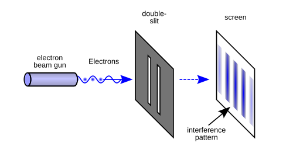
Doble rendija con un fotón a la vez: cada detección es un punto, pero con miles de eventos aparecen las franjas.
El experimento que resume la dualidad
Si se envían fotones uno por uno a una doble rendija, cada uno se detecta en un solo punto de la pantalla (comportamiento de partícula). Pero al acumular miles de detecciones, los puntos se agrupan formando las franjas de interferencia (comportamiento de onda). La onda no describe «dónde está» el fotón, sino la probabilidad de detectarlo en cada lugar.
6. Efecto fotoeléctrico: el experimento
Efecto fotoeléctrico: desprendimiento de electrones de diversas superficies metálicas mediante luz.
Cómo leer el montaje
La luz cae sobre una superficie metálica fotosensible (el cátodo, conectado al polo negativo) dentro de un tubo al vacío. El vacío evita que los electrones choquen con moléculas de aire.
La luz libera electrones de esa superficie (fotoelectrones).
Los electrones liberados son atraídos por la placa positiva (el ánodo) y producen una corriente medible en el amperímetro.
Si se invierte la polaridad, los electrones son frenados. El voltaje al que la corriente cae a cero, \(V_0\), es el potencial de frenado y permite calcular su energía cinética: \(K_{\max} = e\,V_0\).
Se encontró que los electrones son expulsados tan pronto como se enciende la luz.
Montaje: la luz expulsa electrones del cátodo (−) hacia el ánodo (+); el amperímetro mide la corriente.
Una historia de ironías
En 1887 Hertz confirmó las ondas electromagnéticas con un circuito de chispas. Notó además que las chispas saltaban más fácilmente si iluminaba los electrodos con luz ultravioleta. El mismo experimento que consagró la teoría ondulatoria descubrió el fenómeno que la pondría en crisis. Hallwachs (1888) lo estudió en placas de zinc, y J.J. Thomson (1899) mostró que las partículas liberadas eran electrones.
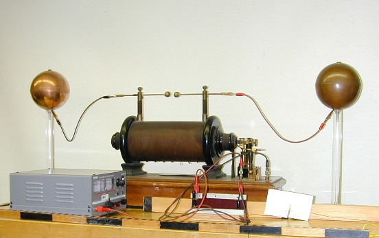
Aparato de Hertz: emisor y receptor de chispas, con el que generó y detectó ondas electromagnéticas.
7. Observaciones sobre el efecto fotoeléctrico
Los experimentos de Hallwachs y sobre todo de Lenard (1902) dejaron cuatro resultados robustos:
1Emisión inmediata
Los primeros electrones aparecen sin retraso apreciable (hoy se sabe que es menor de unos nanosegundos). Ese retraso no depende del brillo ni de la frecuencia de la luz.
2Frecuencia umbral
El efecto es notable con luz violeta o ultravioleta, pero no ocurre con luz roja, por muy intensa que sea. Cada metal tiene su frecuencia mínima.
3Corriente ∝ intensidad
Si la frecuencia es suficiente, la cantidad de electrones expulsados es proporcional a la intensidad de la luz.
4Energía máxima ∝ frecuencia
La energía máxima de los electrones expulsados no se afecta por la intensidad. Sí depende de la frecuencia de la luz, creciendo con ella.
Los cuatro resultados se obtienen variando la intensidad (brillo) y la frecuencia (color) de la luz.
Dos perillas independientes
En el experimento tienes dos «perillas»: el brillo (intensidad) y el color (frecuencia). Los cuatro resultados dicen que cada una controla una cosa distinta: el brillo controla cuántos electrones salen; el color controla con cuánta energía salen y si salen o no.
8. El choque con la física clásica
Si la luz fuese únicamente una onda con energía continua, ¿qué deberíamos esperar? Comparemos con lo que se midió:
Aspecto
Predicción de la teoría ondulatoria
Lo observado
Intensidad y energía de los electrones
Más brillo = campo más intenso = electrones más veloces.
La energía máxima no cambia con la intensidad.
Frecuencia
No debería existir un umbral: cualquier color serviría con suficiente brillo.
Por debajo de \(f_0\) no sale ningún electrón, sin importar el brillo.
Tiempo de respuesta
Con luz débil el electrón tardaría en acumular la energía necesaria.
Emisión casi instantánea, incluso con luz muy débil.
Energía vs. color
La energía no depende de la frecuencia, solo de la amplitud.
La energía máxima crece linealmente con la frecuencia.
El argumento del tiempo de acumulación
Supón que el electrón recoge la energía de la onda que cae sobre el área de un átomo, \(A \approx 3\times10^{-20}\) m². Con una luz débil de \(I = 1\) W/m², para acumular \(W = 2\) eV tardaría
\[ t = \frac{W}{I\,A} \approx 10\ \text{s} \]
Estimación de orden de magnitud. Se observa menos de 10⁻⁹ s.
Analogía del muro
Imagina que el electrón está en un foso y el metal es un muro de altura \(W\). Un solo salto grande, que supere el muro, lo saca (y le sobra energía para salir corriendo). Mil saltitos pequeños no se suman, porque entre uno y otro el electrón vuelve a caer. Brillo = cuántas personas saltan; color = qué tan fuerte salta cada una.
Conclusión
El efecto fotoeléctrico no es un detalle: contradice cuatro predicciones de la teoría ondulatoria. Para explicarlo, la energía de la luz no puede estar repartida de forma continua. Debe llegar concentrada en paquetes.
9. La explicación de Einstein (1905)
Con luz brillante se expulsan más electrones, pero no a mayores rapideces. En cambio, un débil rayo de luz ultravioleta produce pocos electrones, pero con rapideces mucho mayores.
Einstein atribuyó propiedades cuánticas a la luz y consideró que la radiación tenía carácter corpuscular. Un fotón se absorbe por completo en cada electrón expulsado del metal.
Tres ideas clave
La luz de frecuencia \(f\) está formada por fotones, cada uno con energía \(E = hf\).
La cantidad de fotones en un rayo controla el brillo de todo el rayo; la frecuencia controla la energía de cada fotón individual.
Un fotón cede toda su energía a un solo electrón: todo o nada, sin acumulación entre varios fotones.
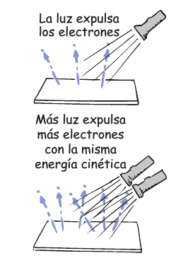
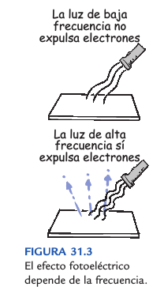
Izquierda: más luz (más fotones) expulsa más electrones con la misma energía cinética. Derecha: la luz de baja frecuencia no expulsa electrones; la de alta frecuencia sí.
Cómo explica cada observación
Observación
Explicación con fotones
Emisión inmediata
La energía llega concentrada en un solo fotón. No hay nada que acumular.
Frecuencia umbral
Si la energía de un fotón es menor que el trabajo de extracción, ningún fotón individual puede liberar un electrón, por muchos fotones que lleguen.
Corriente ∝ intensidad
Más fotones por segundo → más electrones liberados por segundo (a razón de un electrón por cada fotón absorbido).
Energía máxima ∝ frecuencia
La energía que sobra después de pagar el costo de salir depende solo de la energía de cada fotón, es decir, de su frecuencia.
10. ¿Cuánta energía lleva un fotón?
Energía de un fotón:
\[ E = h f = \frac{h c}{\lambda} \]
\(h = 6{,}626\,070\,15\times10^{-34}\) J·s \(= 4{,}135\,667\,7\times10^{-15}\) eV·s
\(\hbar = h/2\pi = 1{,}054\,571\,8\times10^{-34}\) J·s \(= 6{,}582\,119\,6\times10^{-16}\) eV·s
Atajo práctico
Como \(hc \approx 1240\) eV·nm,
\[ E\,(\text{eV}) \approx \frac{1240}{\lambda\,(\text{nm})} \]
Un fotón de 400 nm (violeta) lleva 3,1 eV; uno de 700 nm (rojo), 1,77 eV: casi el doble.
Y para un haz completo, la intensidad es el número de fotones que cruzan cada m² por segundo (\(\Phi\)) multiplicado por la energía de cada uno:
\[ I = \Phi\, h f \]
La luz visible en electronvoltios
Color
λ (nm)
f (THz)
E (eV)
Violeta
380–450
668–789
2,76–3,26
Azul
450–475
631–668
2,61–2,76
Cian
476–495
606–630
2,50–2,60
Verde
495–570
526–606
2,18–2,50
Amarillo
570–590
508–526
2,10–2,18
Naranja
590–620
484–508
2,00–2,10
Rojo
620–750
400–484
1,65–2,00
380 nm · 3,3 eV550 nm · 2,25 eV750 nm · 1,65 eV
¿Por qué la luz parece continua?
Un puntero láser verde de 5 mW (532 nm) emite unos \(1{,}3\times10^{16}\) fotones por segundo. Cada fotón lleva apenas \(3{,}7\times10^{-19}\) J, así que el «granulado» es imposible de notar. Solo con detectores sensibles (o con luz muy tenue) se ven los fotones uno a uno. El ojo humano detecta del orden de 5 a 10 fotones absorbidos en la retina.
Un fotón violeta vs. uno rojo
Tienen la misma rapidez en el vacío, pero el violeta lleva casi el doble de energía. Por eso la luz violeta o ultravioleta puede arrancar electrones donde la luz roja, aunque sea miles de veces más intensa, no puede.
11. Energía en el efecto fotoeléctrico
En un metal los electrones se sostienen mediante fuerzas de atracción eléctricas. Un mínimo de energía, llamado trabajo de extracción \(W\) (o función de trabajo), se requiere para que el electrón salga de la superficie. Así, la energía del fotón que entra es igual a la energía cinética del electrón saliente más la energía necesaria para extraerlo:
\[ \underbrace{h f}_{\text{fotón}} = \underbrace{W}_{\text{salir del metal}} + \underbrace{\tfrac{1}{2} m_e v^2_{\max}}_{K_{\max}} \]
Umbral: \( W = h f_0 \;\Rightarrow\; f_0 = \dfrac{W}{h},\quad \lambda_0 = \dfrac{hc}{W} \)
Potencial de frenado: \( e\,V_0 = K_{\max} = h f - W \)
¿Por qué «energía cinética máxima»?
\(W\) es el costo mínimo: lo paga el electrón más débilmente ligado, cerca de la superficie. Los electrones que estaban más profundos gastan energía adicional (en choques dentro del metal) y salen más lentos. Los más rápidos son los de la superficie: de ahí el «máx».
El electronvoltio (eV)
1 eV es la energía que adquiere un electrón al ser acelerado a través de una diferencia de potencial de 1 V.
1 eV = 1,602 176 634 × 10⁻¹⁹ J · \(m_e = 9{,}109\times10^{-31}\) kg
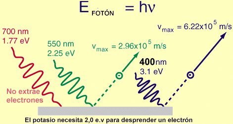
Potasio con \(W = 2{,}0\) eV (valor de la figura; en tablas suele aparecer ≈ 2,3 eV según la superficie). El fotón de 700 nm (1,77 eV) no extrae electrones; el de 550 nm (2,25 eV) y el de 400 nm (3,1 eV) sí, y el segundo les da más velocidad.
Ejemplo resuelto
Luz de 400 nm sobre potasio (\(W = 2{,}3\) eV):
\(E = 1240/400 = 3{,}10\) eV
\(K_{\max} = 3{,}10 - 2{,}3 = 0{,}80\) eV
\(v_{\max} = \sqrt{2K_{\max}/m_e} \approx 5{,}3\times10^{5}\) m/s
\(V_0 = 0{,}80\) V
Umbral: \(\lambda_0 = 1240/2{,}3 \approx 539\) nm. La luz roja (700 nm) no sirve.
Cada metal tiene su umbral
Metal
W (eV)
f₀ (10¹⁴ Hz)
λ₀ (nm)
Se activa con…
Cesio (Cs)
≈ 2,1
5,1
590
Luz visible (hasta el naranja)
Potasio (K)
≈ 2,3
5,6
539
Luz visible (hasta el verde)
Zinc (Zn)
≈ 4,3
10,4
288
Solo ultravioleta
Cobre (Cu)
≈ 4,7
11,4
264
Solo ultravioleta
Platino (Pt)
≈ 5,65
13,7
219
Solo ultravioleta lejano
Valores aproximados: W depende de la limpieza y de la orientación cristalina de la superficie.
12. Verificando la ecuación: la recta de Millikan
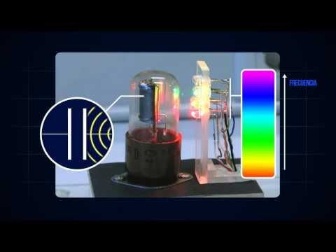
Fototubo: al iluminar el cátodo con luz de distintos colores, cada color da un potencial de frenado distinto.
La ecuación \(K_{\max} = hf - W\) es una recta en un gráfico de energía contra frecuencia:
La pendiente es \(h\), la misma para todos los metales.
La intersección con el eje horizontal es la frecuencia umbral \(f_0\).
Metales distintos dan rectas paralelas desplazadas por su \(W\).
Millikan (1914–1916)
Robert Millikan, escéptico de la idea del fotón, midió con cuidado extremo el potencial de frenado para varias frecuencias en metales alcalinos al vacío. Sus rectas confirmaron la ecuación de Einstein y le dieron \(h \approx 6{,}57\times10^{-34}\) J·s, con un error menor del 1 %. Millikan recibió el Nobel en 1923, y Einstein el suyo en 1921.
Gráfico: la recta azul es el metal elegido y las grises son los demás; todas tienen la misma pendiente \(h\). Prueba: sube el brillo y observa que solo cambia la corriente, no la energía de cada electrón. Luego cambia la longitud de onda y verás el efecto contrario.
13. Aplicaciones del efecto fotoeléctrico
En todas ellas un fotón libera o desplaza un electrón y esa carga se convierte en una señal eléctrica útil.
Efecto fotoeléctrico externo
El electrón sale del material hacia el vacío. Es el que explicó Einstein. Lo usan los fototubos, los fotomultiplicadores y la espectroscopía de fotoelectrones.
Efecto fotoeléctrico interno (fotovoltaico)
El electrón no sale: pasa a la banda de conducción dentro de un semiconductor. Sigue la misma lógica de umbral, ahora con la brecha de energía \(E_g\) en lugar de \(W\). Lo usan las celdas solares, los CCD y los fotodiodos.
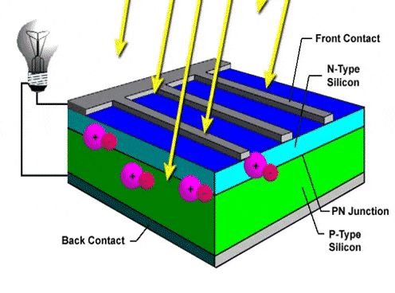
Celda solar: los fotones generan pares electrón-hueco en la unión p-n.
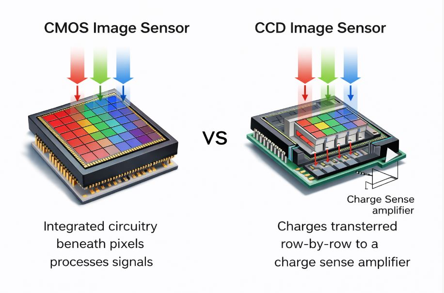
Sensor de imagen: cada píxel acumula carga proporcional al número de fotones.
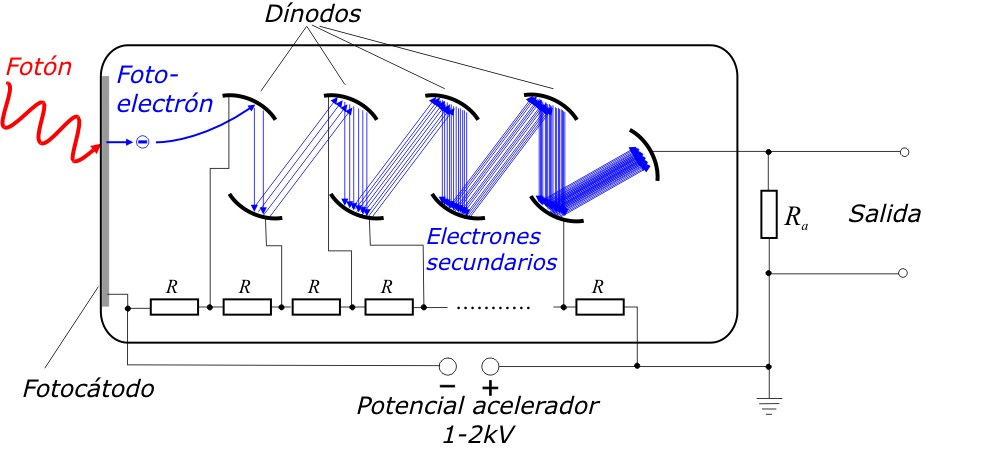
Fotomultiplicador: un fotoelectrón se multiplica en los dínodos hasta dar un pulso medible.
Celdas o paneles solares
Asociadas a energías limpias, especialmente la suministrada por la luz del Sol. En el silicio \(E_g = 1{,}12\) eV, lo que corresponde a \(\lambda \le 1100\) nm. Los fotones infrarrojos de mayor longitud de onda no generan corriente, y los muy energéticos pierden el exceso como calor. Por eso una celda de una sola unión tiene un límite teórico de eficiencia de alrededor de 30–33 % (límite de Shockley-Queisser).
Dispositivo de carga acoplada (CCD)
Asociado a las cámaras fotográficas y a los telescopios: cada píxel convierte fotones en electrones, que se cuentan como imagen.
Sensores (fotodiodos)
Controles remotos, lectores de código de barras, receptores de fibra óptica y medidores de luz de las cámaras.
Automatización
Puertas automáticas, barreras de luz que cuentan piezas en una banda transportadora, alarmas de humo y encendido automático del alumbrado. Es un sensor que cambia su señal cuando cambia el número de fotones.
Fotomultiplicadores
Detectan fotones individuales. El observatorio de neutrinos Super-Kamiokande usa más de 11 000 de ellos para ver destellos tenues en agua.
Parque solar La Loma (El Paso, Cesar)
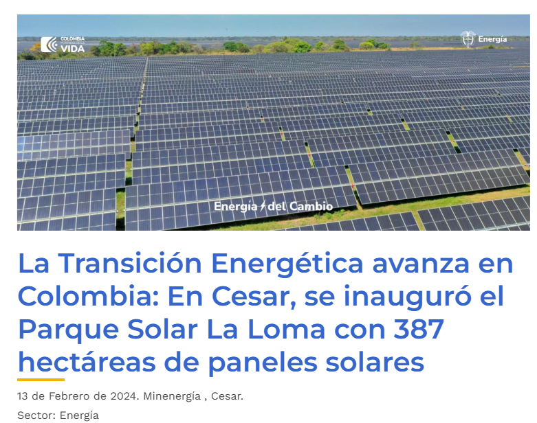
Inaugurado el 13 de febrero de 2024, fue el parque solar más grande de Colombia en ese momento: 187 MW instalados, unos 400 000 paneles bifaciales en 387 hectáreas y una generación media cercana a 420 GWh por año.
Fuentes: MinEnergía (13-feb-2024), Enel Américas, El Tiempo.
Fotón: cuanto de radiación electromagnética con energía \(E = hf\) y momento lineal \(p = E/c\). Es la partícula que viaja a la velocidad de la luz y media la interacción con la materia: la luz puede ejercer presión sobre una superficie (presión de radiación).
Propiedad
Valor
Energía
\(E = hf = hc/\lambda\)
Momento lineal
\(p = E/c = h/\lambda\)
Masa en reposo
0 (cota experimental: menos de 10⁻¹⁸ eV/c²)
Carga eléctrica
0
Espín
1 (es un bosón)
Rapidez
\(c = 299\,792\,458\) m/s en el vacío, para todos los observadores
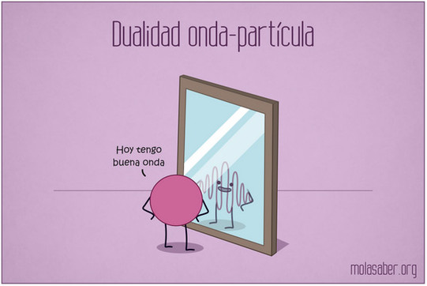
El fotón es la cara «partícula» de un campo que también se comporta como onda. (Ilustración: molesaber.org)
¿Por qué \(p = E/c\)?
Para una partícula sin masa la relatividad da \(E = pc\). Un fotón de 550 nm lleva \(p = h/\lambda \approx 1{,}2\times10^{-27}\) kg·m/s: minúsculo, pero medible. A menor longitud de onda, mayor momento por fotón.
El fotón mediador
Cuando dos cargas se repelen, la descripción cuántica dice que intercambian fotones (virtuales). El fotón es el «mensajero» de la interacción electromagnética. Es la respuesta moderna al problema de la acción a distancia que veremos más adelante.
Prueba del momento: efecto Compton (1923)
Cuando los rayos X chocan con electrones casi libres, salen dispersados con mayor longitud de onda:
Este resultado solo se entiende si el fotón choca como una partícula con energía y momento definidos, y comparte parte de ellos con el electrón.
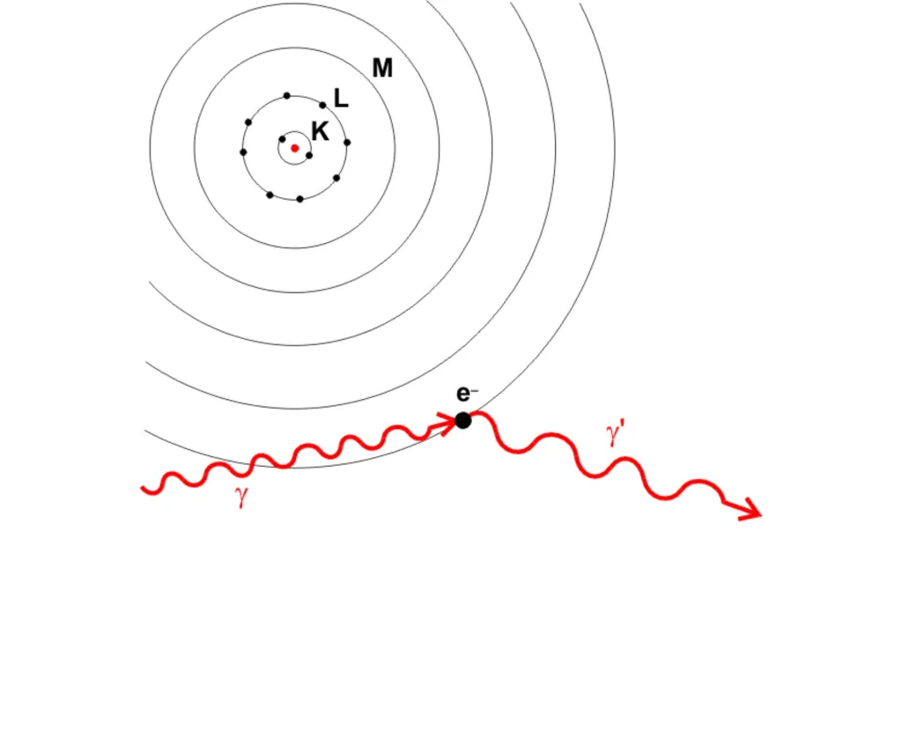
Dispersión Compton: el fotón pierde energía y momento al chocar con el electrón.
15. Presión de radiación y radiómetro
La luz empuja
Cada fotón lleva momento \(p = E/c\). Al absorberse, entrega ese momento a la superficie; al reflejarse entrega el doble. Para una intensidad \(I\):
Superficie absorbente: \( P_{\text{rad}} = \dfrac{I}{c} \) Superficie reflectante: \( P_{\text{rad}} = \dfrac{2I}{c} \)
Con luz solar en la Tierra (\(I \approx 1361\) W/m²) resultan solo 4,5 μPa (absorbente) y 9,1 μPa (reflectante): como el peso de unos 0,5 mg sobre cada metro cuadrado. Es pequeño, pero se mide.
Precisión conceptual
Sabemos que a menor longitud de onda cada fotón tiene más momento. Pero, a igual intensidad, la luz roja tiene más fotones y la azul menos, y la presión total \(I/c\) es la misma. La presión depende de la energía que llega por segundo, no del color.
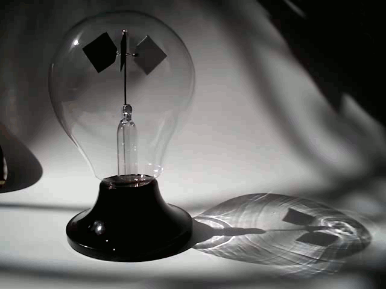
Radiómetro: una veleta con caras blancas y negras alternadas dentro de una burbuja de vidrio al vacío (parcial).
El radiómetro
La idea de la clase: el blanco refleja la luz y el negro la absorbe, así que el intercambio de momento es mayor sobre la cara blanca que sobre la negra.
Aviso: el radiómetro comercial no mide la presión de radiación
En un radiómetro de Crookes real la veleta gira con la cara negra alejándose de la luz. La presión de radiación empujaría al revés (más fuerte sobre la cara reflectante). Lo que mueve la veleta es un efecto térmico: la cara negra se calienta y las moléculas del gas residual rebotan en ella con más energía. La presión de radiación se midió de forma convincente en alto vacío por Lebedev (1900) y por Nichols y Hull (1901).
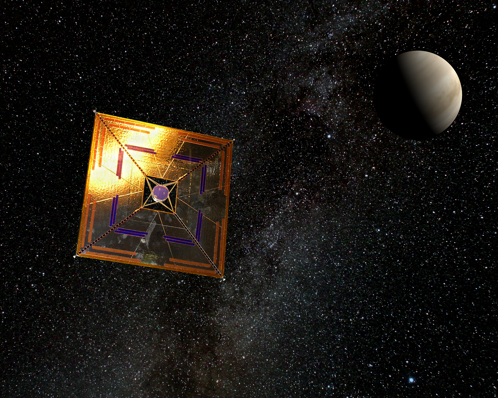
Vela solar IKAROS (JAXA, 2010): navega empujada por la luz del Sol.
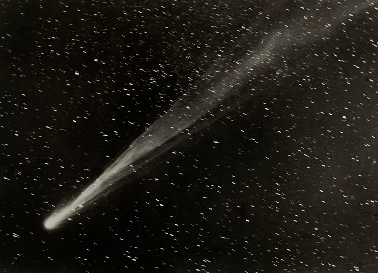
La cola de polvo de un cometa es empujada, en parte, por la presión de radiación solar.
16. Ondas mecánicas (éter) vs. campos
La concepción mecánica de la luz implica un medio para que se propague, como el aire para el sonido o el agua para las olas. El medio propuesto fue el éter lumínico, que tenía propiedades contradictorias:
Debía ser tan rígido como el acero: un medio solo transmite ondas transversales (como la luz) si es rígido, y para viajar a rapidez \(c\) esa rigidez debía ser enorme...
...pero más tenue que el aire, pues los planetas se mueven sin resistencia apreciable.
Además debía llenar todo el espacio, por lo que los grandes cuerpos debían moverse a través de él.
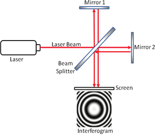
Interferómetro de Michelson-Morley: compara el tiempo de viaje de la luz en dos brazos perpendiculares.
El experimento de Michelson-Morley (1887) demostró que el éter no existe
Si la Tierra se moviera a través del éter a unos 30 km/s, al girar el interferómetro debería desplazarse el patrón de franjas en unas 0,4 franjas. Midieron menos de 0,02 de franja (resultado nulo, compatible con cero). Los experimentos posteriores, cada vez más precisos, confirmaron lo mismo.
Campos en lugar de éter
Onda mecánica (sonido, olas)
Onda electromagnética (luz)
¿Necesita un medio material?
Sí
No: se propaga en el vacío
¿Transporta energía?
Sí
Sí
¿Transporta momento?
Sí
Sí (presión de radiación)
Rapidez
Depende del medio y del movimiento respecto a él
\(c\) en el vacío, la misma para todos los observadores
En conclusión
No es necesario tener un medio para que el campo electromagnético se propague, pero mantiene las características mecánicas: transporte de momento y energía. El campo es una entidad física por derecho propio. Einstein (1905) declaró el éter «superfluo».
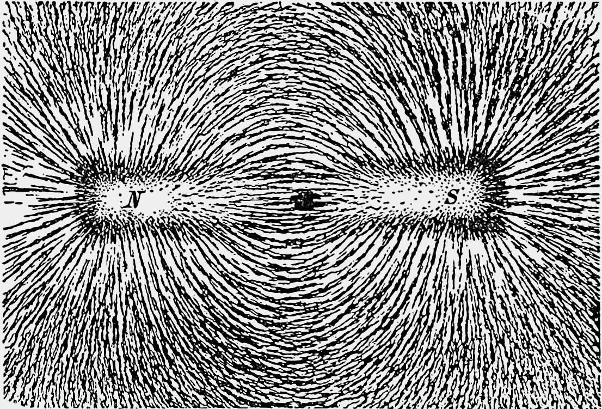
Las líneas de campo se «ven» con limaduras: el campo existe en el espacio vacío alrededor del imán.
17. Fuerzas de acción a distancia
La gravedad de Newton y la ley de Coulomb describían fuerzas que actúan instantáneamente entre cuerpos separados por el vacío. El propio Newton consideraba absurda la idea de que un cuerpo pueda actuar sobre otro a distancia sin nada que lo medie.
El campo electromagnético resuelve el problema de la acción a distancia entre dos cargas que interactúan eléctricamente: no hay una acción a distancia, sino una acción mediada por ondas electromagnéticas que viajan a la velocidad de la luz.
Un ejemplo con tiempos
Si sacudes una carga, una carga vecina responde después de un retraso \(\Delta t = r/c\). Una señal de radio a la Luna (384 000 km) tarda 1,3 s; la luz del Sol (1 UA) llega en unos 8,3 minutos. Ninguna influencia electromagnética es instantánea.
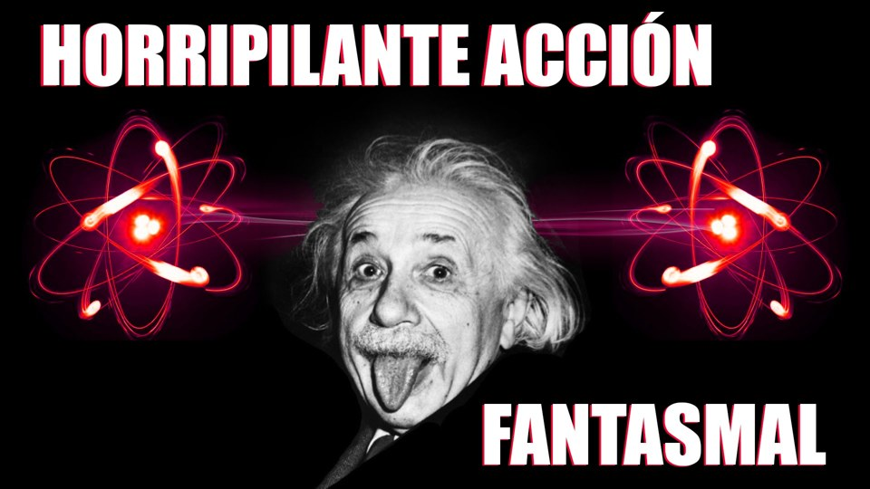
«Horripilante acción fantasmal». Ojo: Einstein usó esa expresión (en una carta a Born, 1947) para el entrelazamiento cuántico, un problema distinto al de la acción a distancia clásica.
La velocidad de la luz es absoluta
Es la misma para todos los observadores. Sin éter no hay un «sistema de referencia privilegiado» respecto al cual medirla, y esa constancia es el segundo postulado de la relatividad especial de Einstein. Su valor, \(c = 299\,792\,458\) m/s, es exacto: hoy el metro se define a partir de él.
De la acción a distancia al intercambio de fotones
1. Newton / Coulomb
Fuerza instantánea entre cuerpos distantes. Sin mecanismo.
2. Faraday / Maxwell
Las cargas crean campos en el espacio. El campo actúa localmente y sus cambios se propagan a \(c\).
3. Teoría cuántica
El campo está cuantizado: la interacción es un intercambio de fotones (mediadores).
Síntesis: ¿Partículas de luz?
1
Onda Young, Maxwell, Hertz
2
Crisis Efecto fotoeléctrico
3
Fotón \(E = hf\), \(p = h/\lambda\)
4
Campo Sin éter, acción mediada
Conceptos fundamentales
Luz como onda
Interferencia y difracción.
\(c = 1/\sqrt{\mu_0\varepsilon_0}\).
Intensidad \(\propto E_0^2\).
Luz como fotón
\(hf = W + K_{\max}\).
Brillo = número de fotones.
Color = energía por fotón.
Pregunta para pensar
¿Es la luz onda o partícula? Esa pregunta quizá esté mal planteada. La luz es un objeto cuántico: se propaga siguiendo reglas de onda (probabilidades que interfieren) y se detecta en paquetes (fotones). Las dos imágenes son herramientas, y saber cuál usar en cada caso es parte de saber física.
Pon a prueba tu comprensión
1. Una lámpara roja de 100 W no libera electrones del zinc, pero un LED ultravioleta de 1 mW (254 nm) sí. ¿Por qué?
Cada fotón rojo (650 nm) lleva 1,9 eV, menos que \(W_{\text{Zn}} \approx 4{,}3\) eV: ninguno puede extraer un electrón, por muchos que lleguen. Cada fotón ultravioleta de 254 nm lleva 4,9 eV y sí supera el umbral.
2. Se duplica el brillo de una luz azul que ya libera electrones. ¿Qué cambia: la corriente, la energía máxima o ambas?
Cambia la corriente (llegan el doble de fotones, salen el doble de electrones). La energía máxima de cada electrón no cambia, porque depende solo de la frecuencia.
3. ¿Luz de 300 nm libera electrones del cobre (W ≈ 4,7 eV)?
\(E = 1240/300 \approx 4{,}13\) eV, menor que 4,7 eV. No: está por debajo del umbral (\(\lambda_0 \approx 264\) nm). Con 250 nm (4,96 eV) sí habría emisión, con \(K_{\max} \approx 0{,}26\) eV.
4. ¿Por qué un panel de silicio no aprovecha fotones infrarrojos de 1500 nm?
Su energía es \(1240/1500 \approx 0{,}83\) eV, menor que la brecha del silicio (1,12 eV). No pueden crear pares electrón-hueco.
5. Si la luz es una onda, ¿por qué un sensor de cámara registra puntos individuales?
Porque la absorción es un proceso cuántico: la energía se entrega en fotones completos a un solo píxel. La onda determina la probabilidad de dónde caerá cada fotón; la acumulación de muchos fotones reconstruye la imagen (y las franjas de interferencia).
6. ¿Por qué el radiómetro de Crookes gira «al revés» de lo que predice la presión de radiación?
Porque su movimiento es un efecto térmico del gas residual, no de la luz que empuja. La presión de radiación es demasiado pequeña (μPa) para vencer ese efecto en un vacío parcial.